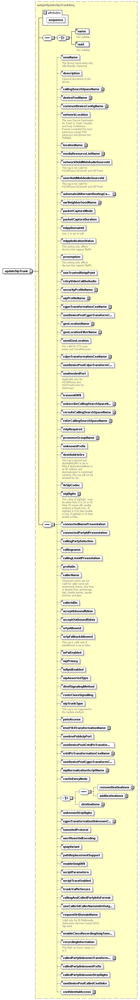

element
updateSipTrunk
diagram

namespace
http://www.cisco.com/AXL/API/10.5
type
axlapi:UpdateSipTrunkReq
properties
content
complex
children
name
uuid
newName
description
callingSearchSpaceName
devicePoolName
commonDeviceConfigName
networkLocation
locationName
mediaResourceListName
networkHoldMohAudioSourceId
userHoldMohAudioSourceId
automatedAlternateRoutingCssName
aarNeighborhoodName
packetCaptureMode
packetCaptureDuration
mlppDomainId
mlppIndicationStatus
preemption
useTrustedRelayPoint
retryVideoCallAsAudio
securityProfileName
sipProfileName
cgpnTransformationCssName
useDevicePoolCgpnTransformCss
geoLocationName
geoLocationFilterName
sendGeoLocation
cdpnTransformationCssName
useDevicePoolCdpnTransformCss
unattendedPort
transmitUtf8
subscribeCallingSearchSpaceName
rerouteCallingSearchSpaceName
referCallingSearchSpaceName
mtpRequired
presenceGroupName
unknownPrefix
destAddrIsSrv
tkSipCodec
sigDigits
connectedNamePresentation
connectedPartyIdPresentation
callingPartySelection
callingname
callingLineIdPresentation
prefixDn
callerName
callerIdDn
acceptInboundRdnis
acceptOutboundRdnis
srtpAllowed
srtpFallbackAllowed
isPaiEnabled
sipPrivacy
isRpidEnabled
sipAssertedType
dtmfSignalingMethod
routeClassSignalling
sipTrunkType
pstnAccess
imeE164TransformationName
useImePublicIpPort
useDevicePoolCntdPnTransformationCss
cntdPnTransformationCssName
useDevicePoolCgpnTransformCssUnkn
sipNormalizationScriptName
runOnEveryNode
removeDestinations
addDestinations
destinations
unknownStripDigits
cgpnTransformationUnknownCssName
tunneledProtocol
asn1RoseOidEncoding
qsigVariant
pathReplacementSupport
enableQsigUtf8
scriptParameters
scriptTraceEnabled
trunkTrafficSecure
callingAndCalledPartyInfoFormat
useCallerIdCallerNameinUriOutgoingRequest
requestUriDomainName
enableCiscoRecordingQsigTunneling
recordingInformation
calledPartyUnknownTransformationCssName
calledPartyUnknownPrefix
calledPartyUnknownStripDigits
useDevicePoolCalledCssUnkn
confidentialAccess
attributes
Name
Type
Use
Default
Fixed
Annotation
sequence
xsd:unsignedLong
optional
source
<
xsd:element
name
=
"updateSipTrunk
"
type
=
"axlapi:UpdateSipTrunkReq
"/>
XML Schema documentation generated by
XMLSpy
Schema Editor
http://www.altova.com/xmlspy